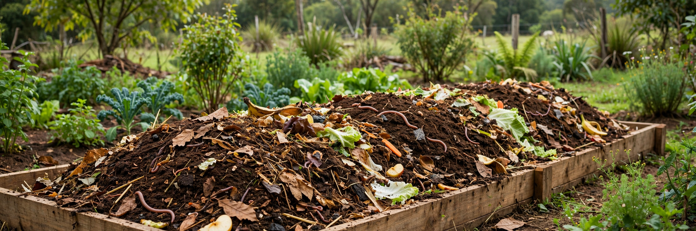
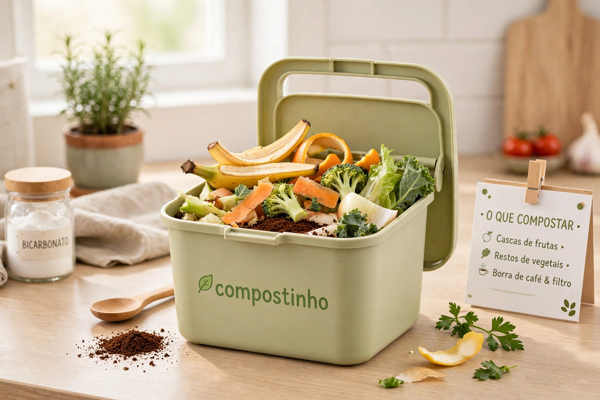
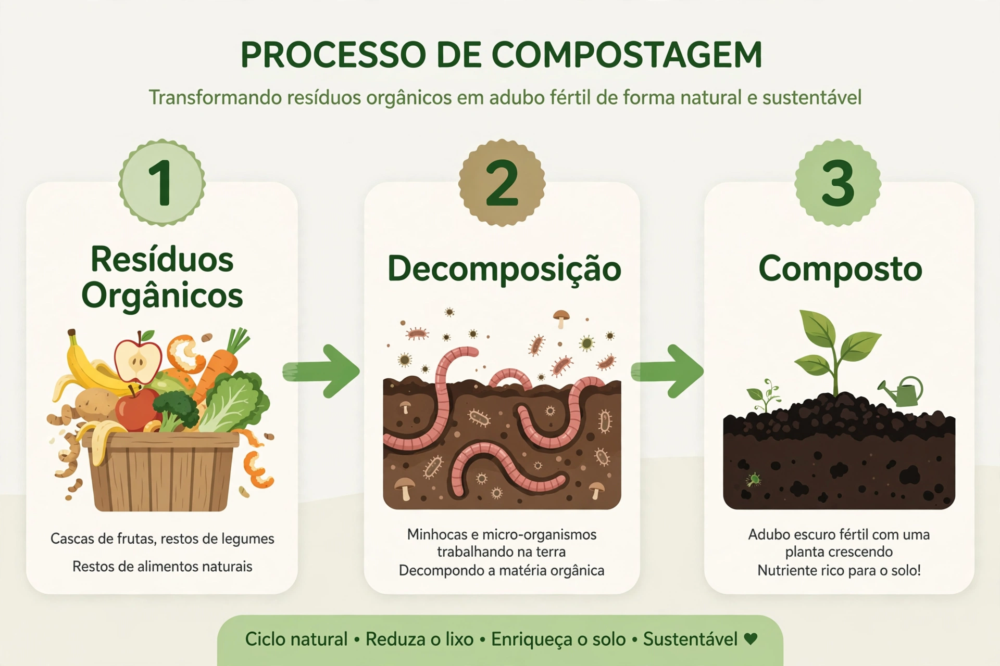
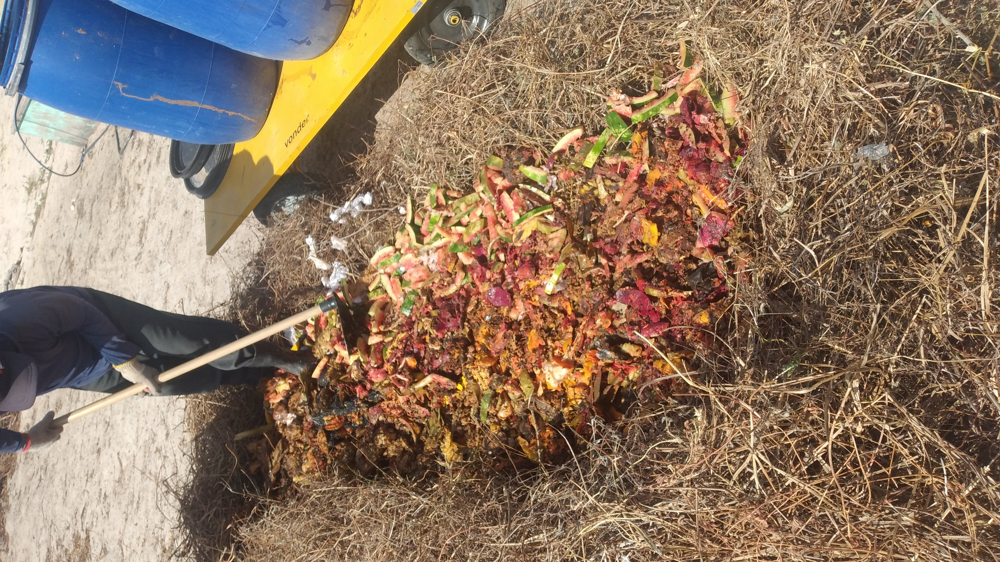
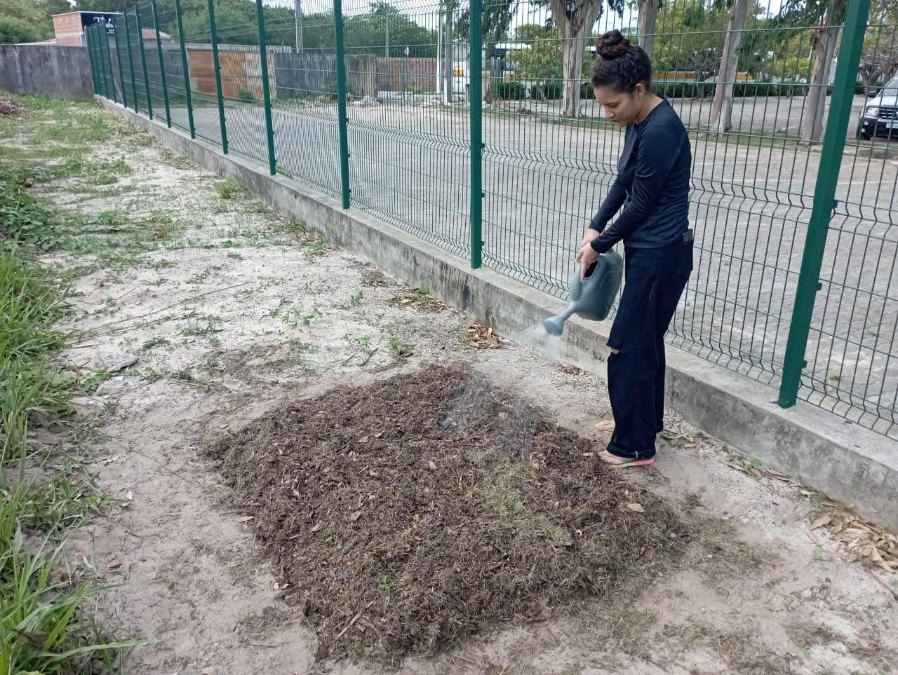
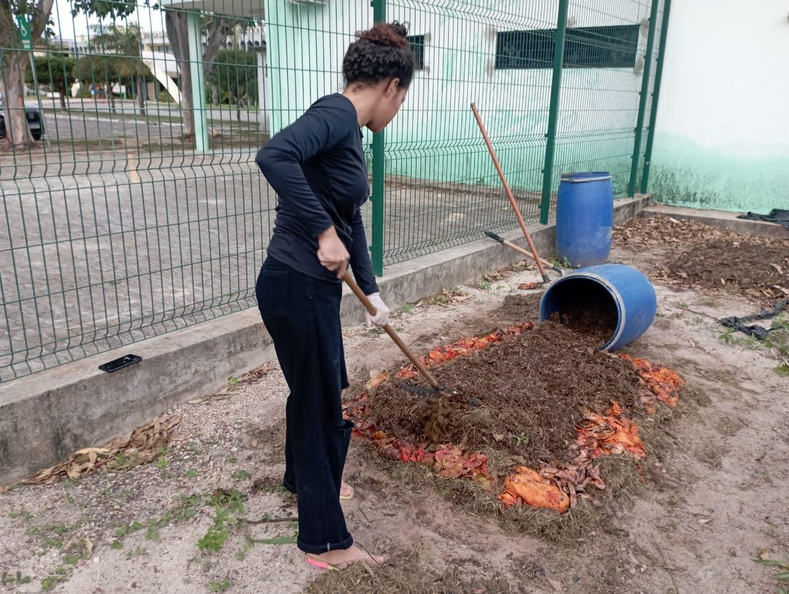
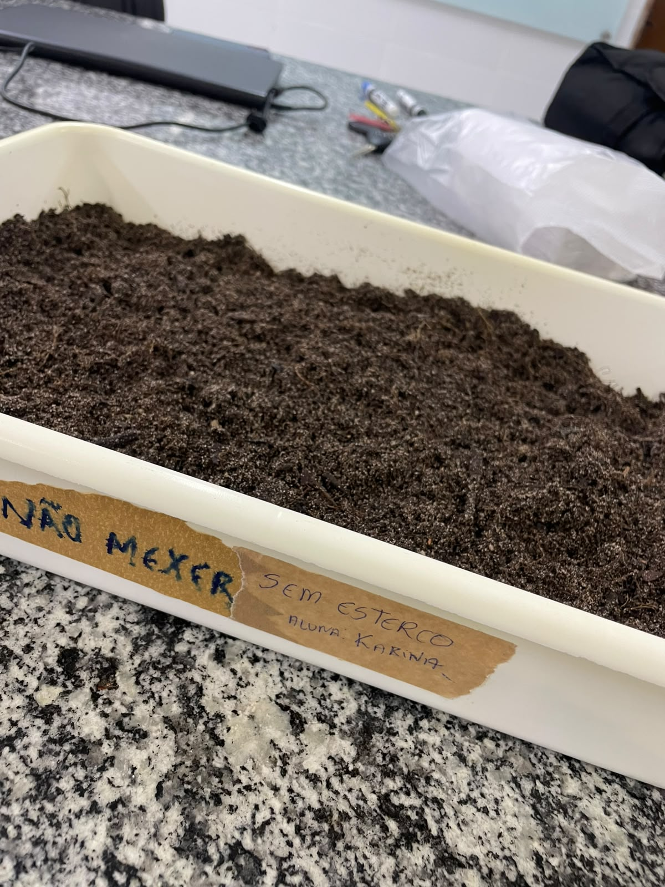
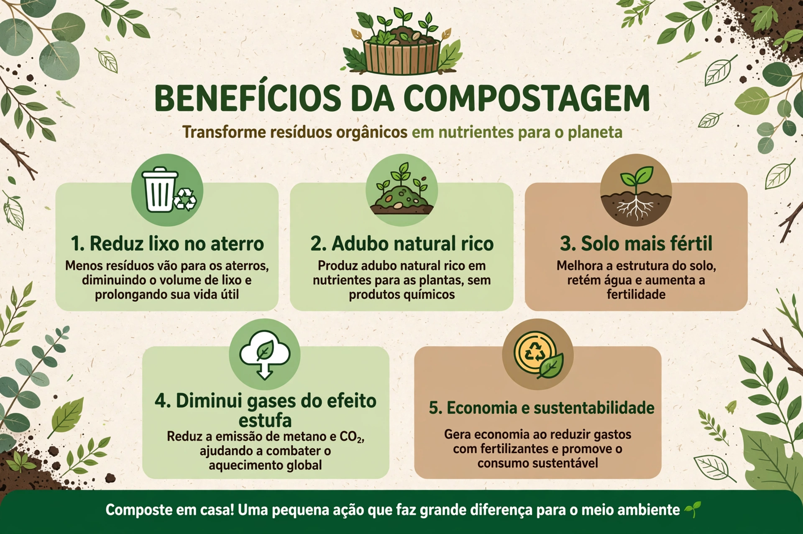

Transformando resíduos em vida
Descubra como a compostagem transforma resíduos orgânicos em nutrientes para o solo e contribui para um futuro mais sustentável.
Começar a aprender
Pesquisa em compostagem de resíduos orgânicos
Compostagem que transforma resíduos em conhecimento
Este projeto busca mostrar como os resíduos orgânicos podem ser reaproveitados por meio da compostagem, unindo sustentabilidade, educação ambiental e pesquisa científica.
Reaproveitamento
Resíduos orgânicos são aproveitados como parte do processo de compostagem.
Sustentabilidade
A compostagem contribui para práticas mais sustentáveis e para a redução do descarte de resíduos.
Pesquisa científica
O experimento acompanha diferentes condições de compostagem e realiza análises das amostras obtidas.
O que é compostagem?
A compostagem é um processo natural de decomposição da matéria orgânica, realizado principalmente pela ação de microrganismos.
Durante esse processo, resíduos orgânicos são transformados em um material rico em nutrientes, que pode ser utilizado para melhorar a qualidade do solo.
O que pode ser compostado?
Alguns resíduos orgânicos do nosso dia a dia podem ser reaproveitados por meio da compostagem.
Frutas e verduras
Cascas, talos e restos de frutas e verduras.
Folhas secas
Folhas e outros resíduos vegetais secos.
Borra de café
A borra de café pode ser aproveitada na compostagem.
Restos vegetais
Resíduos de origem vegetal que podem retornar ao solo.

Como fazer compostagem?
A compostagem acontece por meio da decomposição dos resíduos orgânicos, que são transformados gradualmente em um material rico em matéria orgânica.
Separe os resíduos
Separe os materiais orgânicos, como restos de frutas, verduras e resíduos vegetais.
Monte a leira
Organize os resíduos em camadas, mantendo uma boa mistura entre os diferentes materiais.
Acompanhe o processo
Observe a umidade, a temperatura e a oxigenação durante o período de decomposição.
Obtenha o composto
Ao final do processo, os resíduos se transformam em um material estabilizado que pode ser utilizado no solo.

Nosso experimento
O estudo foi desenvolvido no IFCE Campus Acaraú com o objetivo de acompanhar o processo de compostagem de resíduos orgânicos por meio da formação de duas leiras.
Leiras de compostagem
O experimento foi organizado em duas leiras para acompanhar o processo de decomposição dos resíduos orgânicos.
Resíduos orgânicos
Foram utilizados resíduos orgânicos provenientes do IFCE Campus Acaraú durante a realização do estudo.
Com e sem esterco
Foram considerados tratamentos com e sem a adição de esterco, permitindo comparar as características dos compostos obtidos.
Análises
Amostras do composto foram encaminhadas para as análises previstas no estudo.
O processo na prática
Confira alguns registros realizados durante as etapas de montagem, acompanhamento e análise das leiras de compostagem no IFCE Campus Acaraú.

Montagem da leira
Registro da leira utilizada durante o desenvolvimento do experimento.

Preparação do esterco
Preparação do esterco utilizado como parte do tratamento experimental.

Revolvimento
Revolvimento das leiras para favorecer a oxigenação e o desenvolvimento do processo de compostagem.

Acompanhamento do processo
Registro de uma das etapas de acompanhamento e manejo das leiras durante o experimento.

Composto obtido
Registro do material obtido ao longo do processo de compostagem.
Benefícios da compostagem
A compostagem contribui para o reaproveitamento dos resíduos orgânicos e pode trazer benefícios para o meio ambiente e para o solo.
Redução de resíduos
Diminui a quantidade de resíduos orgânicos destinados ao descarte.
Melhoria do solo
Produz matéria orgânica que pode contribuir para a qualidade e fertilidade do solo.
Sustentabilidade
Incentiva práticas sustentáveis e o aproveitamento dos recursos naturais.
Reaproveitamento
Transforma resíduos orgânicos em um material que pode retornar ao ambiente.

Curiosidades sobre a compostagem
Além de ser uma alternativa para o reaproveitamento de resíduos, a compostagem também ajuda a compreender melhor o ciclo natural da matéria orgânica.
Processo natural
A compostagem reproduz um processo que acontece naturalmente na decomposição da matéria orgânica.
Microrganismos
Bactérias, fungos e outros microrganismos participam da decomposição dos resíduos.
Umidade é importante
A umidade adequada ajuda os microrganismos a atuarem durante o processo de decomposição.